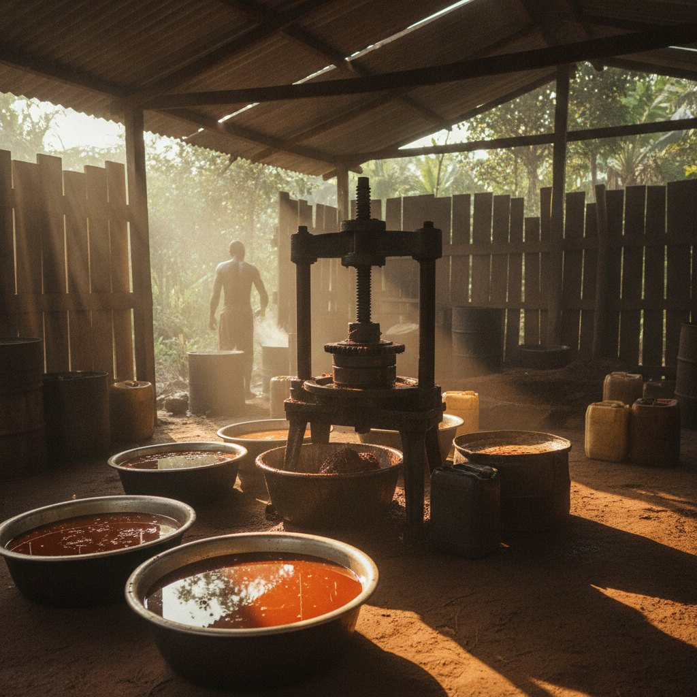

Venir à Ibenga, voir de ses yeux.
L'exploitation reçoit des visiteurs, des étudiants et des porteurs de projet. On marche dans la plantation, on assiste au pressage, on goûte.
Une journée sur l'exploitation.
Le déroulé ci-dessous est une proposition. Il doit être validé, et vécu une fois, avant d'être promis.

La plantation
Palmiers, cacaoyers, safoutiers, ruchers en lisière. On marche, on cueille, on explique ce qui pousse et quand.

L'atelier
Le pressage de l'huile, la fermentation du cacao, selon la saison. On regarde, on sent, on comprend pourquoi ça se fait ici.

La rivière
Le chargement des pirogues, le village. On goûte ce qu'on a vu pousser.

Y aller, y rester.
- Depuis Brazzaville[ vol vers Impfondo, à confirmer ]
- Depuis Impfondo[ route ou rivière · durée à fournir ]
- Hébergement[ au village ou à Enyellé, à confirmer ]
- Saison recommandée[ mois à confirmer ]
- Formalités[ à préciser ]
Aucune de ces lignes n'est renseignée par le site actuel. Elles sont à remplir par l'exploitation avant mise en ligne.
Visite, immersion, formation.
Trois durées proposées, à confirmer par l'exploitation : ce qu'elle peut réellement accueillir, à quel prix, et combien de personnes à la fois.
- La visiteUne journée · [ tarif ]
- L'immersionTrois jours · [ tarif ]
- La formation[ durée ] · cacao ou apiculture · [ tarif ]
Préparer une visite
Dites-nous qui vous êtes et ce que vous venez voir. L'exploitation vous répond avec les dates possibles.
EnvoyerLe formulaire sera activé prochainement. En attendant, appelez le +242 05 536 16 05.